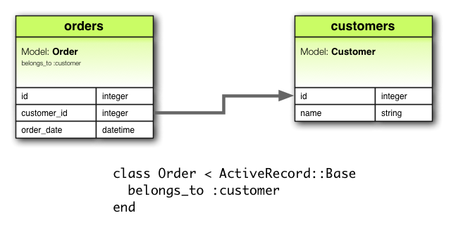
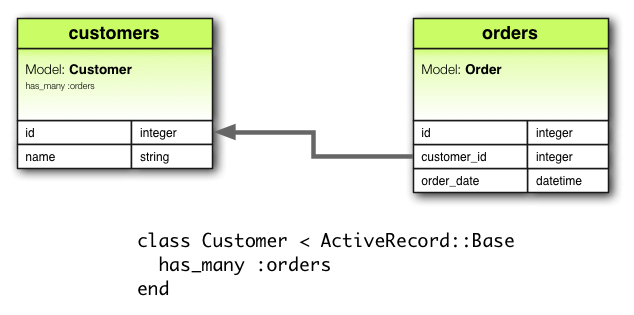

h3(#). 1 왜 ``관계’’인가?
왜 우린 모델들사이에 관계가 필요한 것일까요? 그것은 관계가 연결된 모델들을 보다 간단하고 쉽게 동시에 처리를 해주기 때문입니다. 예를 들어서 간단한 레일즈 응용프로그램이 고객모델과 주문모델을 가지고 있다고 가정합시다. 각각의 고객은 다른 많은 주문을 가지고 있다면, 관계를 사용하지 않는 경우 이 모델들의 선언이 다음과 같이 될 것입니다.
class Customer < ActiveRecord::Base end class Order < ActiveRecord::Base end
여기서, 이미 존재하는 한 고객의 새로운 주문을 추가하길 원하다고 가정해 봅시다. 우리는 다음과 같이 해야 할 것입니다.
@order = Order.create(:order_date => Time.now, :customer_id => @customer.id)
또는 고객을 삭제하고, 그 고객 관련 모든 주문도 삭제해야 한다면 이런 코드를 보시게 될 겁니다.
@orders = Order.where(:customer_id => @customer.id) @orders.each do |order| order.destroy end @customer.destroy
활성 레코드 관계를 사용한다면, 이 두 고객과 주문 모델 사이에 관계가 있음을 선언해 줌으로써 일괄 처리가 가능해 집니다. 여기 수정된 코드를 보시죠.
class Customer < ActiveRecord::Base has_many :orders, :dependent => :destroy end class Order < ActiveRecord::Base belongs_to :customer end
이 수정을 통해서 우리는 한 고객의 새로운 주문 생성이 쉬워졌음을 다음과 같이 알수 있습니다. (떨렁 한줄이예요.)
@order = @customer.orders.create(:order_date => Time.now)
한 고객과 관련된 모든 주문의 삭제는 더더욱 쉬워 졌어요. 다음을 보세요.
@customer.destroy
다양한 관계의 종류를 더 배우시길 원하신다면, 다음 안내서의절(section)을 읽어 주세요. 다음에 소개되는 것들로는 (1) 관계와 관련된 기법들, 묘수들, (2)레일즈에서 제공되는 관계와 연관된 함수들, 그리고 옵션들을 완전하게 설명하는 참고자료가 되겠습니다.
h3(#). 2 관계의 유형들
레일즈에서, 관계 는 활성 레코드 모델들간의 연관을 말합니다. 관련은 매크로 스타일의 호출로 구현되어 있어서, 우리가 선언만 하면 모델들 사이에 만들어 집니다. 예를 들면, 한 모델이 다른 모델에 속해있다는 뜻의 belongs_to 관계를 선언하면 당신은 주열쇠(primary key)-외부열쇠(foreign key) 정보를 이들 모델들의 예(인스턴스, instance)들 사이에 생성하라는 명령을 레일즈에 하게 되는 것입니다. 게다가 이들 모델에 여러 유용함수들이 추가되어 사용할수 있게 됩니다. 레일즈은 다음 여섯 가지의 관계형을 지원합니다.
- belongs_to
- has_one
- has_many
- has_many :through
- has_one :through
- has_and_belongs_to_many
각각의 의미로는 belongs_to B는 B “객체의 예에 속해있다”, has_one B는 B “객체의 예를 하나 갖는다”, has_many B는 B “객체의 예를 여러개 갖는다”, has_many: through B는 B “객체의 예를 통해서 여러개 갖는다”, has_one :through B는 B “객체의 예를를 통해서 하나 갖는다”, 마지막으로 has_and_belongs_to_many B는 B “객체의 예에 속해 있으면서 동시에 B 객체의 예를 많이 갖는다” 입니다.
이 이후로, 당신은 여러 형태의 관계를 어떻게 선언하고 사용하는 지를 배우게 될 것입니다. 이에 앞서서 각각의 관련 유형이 사용되는 상황을 간략하게 먼저 설명드리겠습니다.
2.1 belongs_to 관련
하나의 belongs_to 관련은 다른 모델과의 1: 1 연관을 정의하는데, 한 모델의 예가 다른 모델의 예에 속하게 됩니다. 예를 들어서, 당신의 응용 프로그램이 앞서 설명한 고객과 주문을 포함한다고 가정하겠습니다. 이때 하나의 주문이 오직 하나의 고객에만 관련되어 있다면 당신은 주문 모델을 다음과 같이 선언하게 될것입니다.
class Order < ActiveRecord::Base belongs_to :customer end

2.2 has_one 관련
has_one 관련 또한 다른 모델과의 1:1 관계를 규정합니만 다른 의미와 결과를 갖이게 됩니다. 이 관계는 하나의 모델의 일예가 다른 모델의 일예를 소유하거나 포함하는 것을 의미합니다. 예를 들면당신의 응용프로그램에서 구매부서에서 사용되며 납품회사를 관린한다고 칩시다. 각 납품회사 각각 하나의 계정을 가지고 있다면, 우리는 이납품회사모델을 다음과 같이 선언할 것입니다.
class Supplier < ActiveRecord::Base has_one :account end
2.3 has_many 관련
has_many 다른 모델과 1:다(多:많음) 관계를 말합니다. 아마도 당신은 이 관계가 belong_to관계의 반대 관점이라는 것을 알게 될 것입니다. 이 관계는 다를 모델의 예를 하나도 가지고 있지 않거나 또는 복수개 가지고 있을 때(즉, 0개에서 여러개를 가지고 있을 때) 에 사용하게 됩니다. 예를 들면, 고객과 주문을 처리하는 당신의 응용 프로그램에서 고객 모델이 다음과 같이 선언될 수 있겠습니다.
class Customer < ActiveRecord::Base has_many :orders end
주의: has_many B 관계를 선언하는 경우에orders 와 같이 B가 복수형의 이름을 갖게되는 것을 주목해 주세요.

2.4 has_many : through 관계
has_many : through 관계는 다른 모델과의 多:多 관계를 설정할 때 종종 사용됩니다. 이 관계는 다른 복수(0포함)개의 모델을 제3의 모델을 통해서 가지게 됨을 말합니다. 예를 들면, 내과 의사께서 환자들을 의료 검진하는 상황을 생각해 봅시다. 일반적으로 의료 검진이 예약을 통해서만 가능하기에, 이에 상응하는 관계를 다음과 같이 정의 될 수 있겠습니다.
class Physician < ActiveRecord::Base has_many :appointments has_many :patients, :through => :appointments end class Appointment < ActiveRecord::Base belongs_to :physician belongs_to :patient end class Patient < ActiveRecord::Base has_many :appointments has_many :physicians, :through => :appointments end

연결모델 집합은 API를 통해서 관리됩니다. 예를 들어 내과 의사 객체 예 physician에는 patients API가 있는데 이것에 다른 집한 patients를 대입할 수 있습니다. 다음을 보시죠.
physician.patients = patients
새로운 연결 모델들은 새롭게 연관된 객체 예들로 생성되고, 데이터 베이스의 행이 사라진다면 관련 객체들도 사라질 것입니다.
경고: 연결 모델의 자동 삭제는 직접적이어서 파괴 되부름 함수(destroy callback)의 호출이 없음을 주의해 주세요.
has_many :through 관계는 중첩된 has_many 관계를 간략하게 하는 "지름길"로 유용하게 사용되곤 합니다. 예를 들면 만약 하나의 문서가 여러 절을 가지고 있고, 하나의 절은 많은 문단을 가지고 있을때 만약 한문서의 모든 문단의 단순 집합을 얻길 희망한다면, 다음과 같이 설정이 가능합니다.
class Document < ActiveRecord::Base has_many :sections has_many :paragraphs, :through => :sections end class Section < ActiveRecord::Base belongs_to :document has_many :paragraphs end class Paragraph < ActiveRecord::Base belongs_to :section end
With :through => :sections specified, Rails will now understand:
@document.paragraphs
2.5 has_one :through 관련
has_one :through 관련은 또 다른 모델과의 1:1 연관을 설정합니다. 이 관련은 선언 모델이 제삼의 모델을 통해서 다른 모델과 관련을 갖게 됩니다. 예를 들면, 각각의 납품회사가 하나의 계정을 갖고, 각 계정은 계정내역을 가지고 있을떄에, 다음과 같은 모델을 생성하게 됩니다.
class Supplier < ActiveRecord::Base has_one :account has_one :account_history, :through => :account end class Account < ActiveRecord::Base belongs_to :supplier has_one :account_history end class AccountHistory < ActiveRecord::Base belongs_to :account end

2.6 has_and_belongs_to_many 관련
has_and_belongs_to_many 관련은 다른 모델과다多:多 연결을 사이에 그 어떤 모델도 없이 직접 생성한다. 예를 들어, 응용 프로그램이 부품과 이의 조립품을 포함하는데, 조립품은 많은 부품을 가지면, 한 부품은 많은 부품에 사용된다면, 우리는 다음의 모델을 선언하게 된다.
class Assembly < ActiveRecord::Base has_and_belongs_to_many :parts end class Part < ActiveRecord::Base has_and_belongs_to_many :assemblies end

2.7 belongs_to 와 has_one 의 선택
만약 당신이 두 모델 사이의 1:1 연관을 설정하고자 하고, 한 모델에게는 belongs_to 를 다른 모델에는 has_one 를 설정해야 할 경우, 어떤 모델을 어떻게 선택해야 할까요?
구별법으로는 어디에 외부열쇠(foreign key)를 (이것은belongs_to 관계를 선언하는 객체의 데이터 베이스 테이블에 부착된다) 넣을 것인지에 달려있습니다. 그렇지만 당신은 실재 데이터의 의미 생각해야합니다. has_one 관계는 어떤 사물이 당신의 것이라는 것을 말하며 그 사물은 당신에 속해있음을 가리키게 됩니다. 예를 들면, 납품 회사가 계정을 가지고 있는 것이 계정이 납품회사를 가지는 것보다 더 그럴듯 하지 않나요? 다음의 예를 보시죠.
class Supplier < ActiveRecord::Base has_one :account end class Account < ActiveRecord::Base belongs_to :supplier end
생성된 마이그레이션 코드는 다음과 같이 생기게 됩니다.
class CreateSuppliers < ActiveRecord::Migration
def self.up
create_table :suppliers do |t|
t.string :name
t.timestamps
end
create_table :accounts do |t|
t.integer :supplier_id
t.string :account_number
t.timestamps
end
end
def self.down
drop_table :accounts
drop_table :suppliers
end
end
주의: t.integer :supplier_id 의 사용은 외부 열쇠의 이름을 명확하게 한다. 현재 레일즈 버전에서는 당신은t.references :supplier을 사용하여 구체적인 구현을 추상화 할수 있다.
2.8 has_many :through 와 has_and_belongs_to_many 의 선택
레일즈는 모델들간에 두개의 多:多 관계를 선언하는 방법을 지원합니다. 그중 간단한 방법은 has_and_belongs_to_many 을 사용하는 것인다, 이 방법은 “직접적”으로 관계를 만들게 됩니다.
class Assembly < ActiveRecord::Base has_and_belongs_to_many :parts end class Part < ActiveRecord::Base has_and_belongs_to_many :assemblies end
두번째 多:多 관계를 정의하는 방법인 has_many :through은 연결모델을 통해서 “간접적”으로 관계를 만듭니다.
class Assembly < ActiveRecord::Base has_many :manifests has_many :parts, :through => :manifests end class Manifest < ActiveRecord::Base belongs_to :assembly belongs_to :part end class Part < ActiveRecord::Base has_many :manifests has_many :assemblies, :through => :manifests end
가장 기본이 되는 원칙중 하나는, 우리가 연결 모델을 만들때에 이것이 “독립된” 것으로 간주되어야 할 경우에는has_many :through를 사용하는 것이 더 좋다는 것입니다. 만약, 우리가 그 어떤 것도 연결 모델 자체가 필요 치 않더면has_and_belongs_to_many 관계를 사용하는 게 더 단순한 방법이고 따라서 바람직합니다(하지만 이방법도 데이터베이스의 연결테이블(joining table)이 생성된다는 것 잊지 마세요).
만약 연결 모델상에 검증(validations), 되부름, 추가 속성등이 필요하다면, has_many :through를 사용하셔야 합니다.
2.9 폴리모픽(polymorphic: 다중) 관계
약간은 진일보한 관계로써, 폴리모픽 관계 라는 것이 있습니다. 이 폴리모펙 관계를 이용하면, 하나의 모델이 하나 또는 여러 모델에 속할 수 있습니다. 예를 들면, 우리가 사진(picture)이라는 모델을 가지고 있다고 가정해 보겠습니다. 사진이라는 모델이 직원(employee) 모델 또는 생산품(product) 모델에 속할 수 있다면 다음과 같이 정의될 수 있겠습니다.
class Picture < ActiveRecord::Base belongs_to :imageable, :polymorphic => true end class Employee < ActiveRecord::Base has_many :pictures, :as => :imageable end class Product < ActiveRecord::Base has_many :pictures, :as => :imageable end
당신은 폴리모픽 belongs_to 선언을 그 어떤 다른모델도 사용할 수 있는 인터페이스를 설정한 것으로 생각할 수도 있습니다. Employee모델의 실예에서 당신은 @employee.pictures 처럼 사진집합을 접근하여 읽어들일 수 있습니다.
단순히, @product.pictures 라고 불러 사용할 수 있습니다.
만약 Picture 모델의 실예를 하나 가지고 있다면, 우리는@picture.imageable 호출을 통해서 이것이 속한 부(parent)를 접근할수 있습니다. 이것이 작동하기 위해서는, 우린 이 폴리모픽 인터페이스를 선언하는 외부 열쇠 행과 유형 행 모두를 다음과 같이 선언하여야 합니다.
class CreatePictures < ActiveRecord::Migration
def self.up
create_table :pictures do |t|
t.string :name
t.integer :imageable_id
t.string :imageable_type
t.timestamps
end
end
def self.down
drop_table :pictures
end
end
이 마이그레이션은 t.references 형식(폼)을 이용해 다음과 같이 더 간략화 될수 있겠습니다.
class CreatePictures < ActiveRecord::Migration
def self.up
create_table :pictures do |t|
t.string :name
t.references :imageable, :polymorphic => true
t.timestamps
end
end
def self.down
drop_table :pictures
end
end

h4(#). 2.10 자체 연결
데이터 모델을 설계할 때에 당신은 한 모델이 그 모델 자신과 연관이 있는 경우를 종종 발견하게 될 것입니다. 예를 들면, 모든 직원들을 하나의 데이터 베이스 모델로 저장하길 원하지만, 직원들 중 관리자(manager)와 팀원(subordinates)의 관계를 추적하고 싶어한다고 가정해 보겠습니다. 이러한 상황은 자체연결 관계로 다음과 같이 모델링 될수 있습니다.
class Employee < ActiveRecord::Base
has_many :subordinates, :class_name => "Employee",
:foreign_key => "manager_id"
belongs_to :manager, :class_name => "Employee"
end
이 설정을 사용할 때에 우리는@employee.subordinates 와 @employee.manager 를 접근하여 사용할 수 있습니다.
h3(#). 3 팁, 묘수, 그리고 경고
여기서 우리가 레일즈 응용프로그램에서 효과적으로 활성 레크도관계를 사용하기 위해 몇가지 알아야 할 것들이 있습니다.
- 케쉬(chach임시저장) 제어하기
- 이름 충돌 피하기
- 스키마(schema) 만들기
- 관련 범위 제어하기
h4(#). 3.1 케쉬 제어하기
관계와 관련된 모든 함수는 임시 저장을 하게되는데, 이 말은 가장 최근들어 수행된 데이터베이스 질의를 결과를 기억한다는 것을 말합니다. 이 임시저장은 함수들 사이에서 심지어 공유되기도 합니다. 다음 예를 보시죠.
customer.orders # 데이터베이스의 주문들 을 읽음 customer.orders.size # 데이터 베이스의 케쉬 사용 customer.orders.empty? # 데이퍼 베이스의 케쉬 사용
만약 응응 프로그램의 다른 부분에서 관련된 데이터를 수정하여 메모리상의 케쉬를 갱신하고 싶은 경우에는 다음과 같이true 를 관계호출시에 인자로 넘겨 주시면 됩니다.
customer.orders # 데이터 베이스의 주문들을 읽음 customer.orders.size # 데이터 베이스의 케쉬 사용 customer.orders(true).empty? # 케쉬를 무시하고 데이터 베이스 읽음
h4(#). 3.2 이름 충돌 피하기
당신은 관계를 정의할 때에 아무이름이나 사용할 수 있는 것은 아닙니다. 관계를 생성할 때에 관련된 모델에 관계명과 동일한 함수가 생성되기 때문에ActiveRecord::Base 의 함수와 동일한 이름을 관계명으로 사용하는 것은 바람직 하지 않습니다. 이렇게 할 경우, 관계 함수가 활성 레코드 기초함수를 덮어써버리게 되기 때문입니다. 예를 들어, attributes 또는 connection 은 관계 명으로 바람직 하지 않습니다.h4(#). 3.3 스키마 갱신하기
관계는 대단히 유용합니다. 그렇지만 이것이 마술일 수는 없습니다. 우리에게는 관계와 데이타 베이스 스키마가 부합 되도록 관리할 책임이 있습니다. 실재로 이 말은 우리가 만들 관계의 종류에 따라서 두가지 의미를 갖습니다. belongs_to 관계를 사용한다면, 외래 열쇠를 생성해야 할 것이고, has_and_belongs_to_many 에 대해서는 올바른 연결 테이블을 생성해야 합니다.
3.3.1 belongs_to 관계를 위한 외래 열쇠 만들기
belongs_to 관계를 만들때에, 당신은 올바른 외래키를 만들 필요가 있다. 예를 들어 다음 모델을 생각해 보자.
class Order < ActiveRecord::Base belongs_to :customer end
이 선언은 올바른 외래 열쇠의 선언을 다른 주문 테이블에 저장해야 한다.
class CreateOrders < ActiveRecord::Migration
def self.up
create_table :orders do |t|
t.datetime :order_date
t.string :order_number
t.integer :customer_id
end
end
def self.down
drop_table :orders
end
end
3.3.2 has_and_belongs_to_many 관계를 위한 연결테이블 생성하기
만약 우리가has_and_belongs_to_many 관계를 생성한다면, 우리는 연결 테이블을 명확하게 생성할 필요가 있습니다. :join_table 옵션을 사용하여연결 테이블의 이름을 명확하게 밝히지 않는 이상에는, 활성 레코드는 클래스명을 알파벳 순으로 배열한 이름을 사용할 것입니다. 따라서 고객(customer)과 주문(order) 모델사이의 연결은 “customers_orders” 명을 연결 테이블의 이름으로 사용하게 될텐데 그 이유는 고객의 영문단어 첫글자 "c"가 주문의 영문단어 첫글자 “o” 보다 알파벳 순으로 먼저이기 때문입니다.
모델명간의 우선순우를 알파벳 순으로 결정할 때에 문자열을 위한 객체String 에 정의된 < 연산자(operator)가 사용됩니다. 이 말은 비교되는 문자열의 길이가 다르때에는 짧은 문자열의 길이까지만을 서로 비교하게 되는데, 이래고 같을 경우에는, 길이가 긴 문자열이 알파벳 순으로 더 뒤에 놓이게 됩니다. 예를 들면두 모델 “paper_boxes” 와 “papers” 를 연결하는 테이블의 생성시를 생각해 보겠습니다. 짧은 문자열의 길이까지만을 비교함으로 내부적으로"paper_” 와 “papers” 를 비교하게 되고, 문자’_’ 보다 ‘s’ 가 더 앞서 므로, 연결 테이블 이름은 “papers_paper_boxes” 로 생성되지 않고, 대신 “papers_paper_boxes” 으로 생성됩니다.
이름이 무엇이던 간에, 우리는 올바른 마이그레이션을 통해 연결 테이블을 손수 생성해야만 합니다. 예를 들면 다음 관계예제들과 같이 말입니다.
class Assembly < ActiveRecord::Base has_and_belongs_to_many :parts end class Part < ActiveRecord::Base has_and_belongs_to_many :assemblies end
이 모델들은 assemblies_parts 테이블의 생성을 위해서 마이그레이션이 필요합니다. 이 테이블은 주열쇠 없이 생성되어야만 합니다.
class CreateAssemblyPartJoinTable < ActiveRecord::Migration
def self.up
create_table :assemblies_parts, :id => false do |t|
t.integer :assembly_id
t.integer :part_id
end
end
def self.down
drop_table :assemblies_parts
end
end
우리는:id => false 를 create_table를 인자로 넘겼습니다. 그 이유는 그 테이블이 모델을 표현하고 있지 않기 때문이며 제대로 작동하기 위해서 관계는 그러한 인자가 필요합니다. 만약 당신이has_and_belongs_to_many관계를 사용할 때에 깨진 모델 아이디나 아이디 충돌 예외처리와 같은 이상한 수행결과를 발견한다면, 아마도 이와 같이 인자를 넘기지 않았기 때문일 수 있습니다.
h4(#). 3.4 관계 범위 제어하기
기본으로 관계는 현 모델의 범위내에서 객체의 예들을 찾습니다. 이것은 우리가 활성 레코드 모델을 선언할 때에 중요할 수 있습니다. 다음 예를 보시죠.
module MyApplication
module Business
class Supplier < ActiveRecord::Base
has_one :account
end
class Account < ActiveRecord::Base
belongs_to :supplier
end
end
end
이 예제 코드는 문제 없이 작동 할 것입니다. 왜냐하면Supplier 와 Account 객체가 동일한 범위, 즉, 모듈내에서 정의가 됐기 때문입니다. 반대로, 다음의 예에서는 Supplier 와 Account 제대로 작동하지 않을텐데 그 이유는 이들이 다른 범위에서 정의됐기 때문이죠.
module MyApplication
module Business
class Supplier < ActiveRecord::Base
has_one :account
end
end
module Billing
class Account < ActiveRecord::Base
belongs_to :supplier
end
end
end
다른 이름공간(namespace)에 정의된 모델들 사이를 관계 맺고자 할 경우, 우리는 완전한 객체 명을 관계정의에 명시해야 됩니다. 다음을 보시죠.
module MyApplication
module Business
class Supplier < ActiveRecord::Base
has_one :account,
:class_name => "MyApplication::Billing::Account"
end
end
module Billing
class Account < ActiveRecord::Base
belongs_to :supplier,
:class_name => "MyApplication::Business::Supplier"
end
end
end
h3(#). 4 자세한 관계 참고자료
The following sections give the details of each type of association, including the methods that they add and the options that you can use when declaring an association. 다음 절은 각 관계의 유형별 상세자료를 담고 있습는데, 생성되는 객체 함수들과 이들의 옵션들을 보시게 될 것입니다.
4.1 belongs_to 관계 참고자료
belongs_to 관계는 다른 모델과의 1:1 관계를 생성한다. 데이터베이스 용어로는 이 관계객체가 외래 열쇠를 갖게된다고 말합니다. 만약 관련된 다른 객체가 외래 열쇠를 가지게 된다면, 우리는has_one 관계를 대신 사용해야 합니다.
4.1.1 belongs_to 에 의해서 추가되는 함수들
belongs_to 관계를 선언할 때에, 선언하는 클래스는 자동으로 다음의 네가지 함수들을 가지게 됩니다.
- association(force_reload = false)
- association=(associate)
- build_association(attributes = {})
- create_association(attributes = {})
이 모든 함수들에서association는belongs_to 관계에 정의된 모델명으로 바뀌어야 합니다. 다음의 예를 보시죠.
class Order < ActiveRecord::Base belongs_to :customer end
각 모델의 실예는 이러한 함수들을 갖게 됩니다. 즉, 주문(order)의 실예(instance)는 관련된 다음의 함수를 가지게 됩니다.
customer customer= build_customer create_customer
4.1.1.1 association(force_reload = false)
association 메서드는 관련된 객체를 반환하는데, 만약, 관련된 객체가 존재하지 않으면 nil 을 반환합니다.@customer = @order.customer
만약 데이터베이스로부터 관련객체을 벌써 읽었다면 이 것은 임시저장소(케쉬)의 것이 반환될 것입니다. 캐쉬의 것을 사용하는 이 방법을 무시하고 데이터 베이스의 것을 읽기를 원한다면, force_reload 에 해당하는 인자값을 true 로 넘기셔야 합니다.
4.1.1.2 association=(associate)
association= 메서드는 관련된 객체를 설정할 것입니다. 내부적으로 이것은 관련 객체의 (데이터 베이스의) 주 열쇠값을 꺼내와 (데이터베이스의) 외부 열쇠로 복사하는 것과 같습니다.@order.customer = @customer
4.1.1.3 build_association(attributes = {})
The build_association method returns a new object of the associated type. This object will be instantiated from the passed attributes, and the link through this object’s foreign key will be set, but the associated object will not yet be saved.
@customer = @order.build_customer(:customer_number => 123, :customer_name => "John Doe")
4.1.1.4 create_association(attributes = {})
The create_association method returns a new object of the associated type. This object will be instantiated from the passed attributes, and the link through this object’s foreign key will be set. In addition, the associated object will be saved (assuming that it passes any validations).
@customer = @order.create_customer(:customer_number => 123, :customer_name => "John Doe")
4.1.2 Options for belongs_to
In many situations, you can use the default behavior of belongs_to without any customization. But despite Rails’ emphasis of convention over customization, you can alter that behavior in a number of ways. This section covers the options that you can pass when you create a belongs_to association. For example, an association with several options might look like this:
class Order < ActiveRecord::Base
belongs_to :customer, :counter_cache => true,
:conditions => "active = 1"
end
The belongs_to association supports these options:
- :autosave
- :class_name
- :conditions
- :counter_cache
- :dependent
- :foreign_key
- :include
- :polymorphic
- :readonly
- :select
- :touch
- :validate
4.1.2.1 :autosave
If you set the :autosave option to true, Rails will save any loaded members and destroy members that are marked for destruction whenever you save the parent object.
4.1.2.2 :class_name
If the name of the other model cannot be derived from the association name, you can use the :class_name option to supply the model name. For example, if an order belongs to a customer, but the actual name of the model containing customers is Patron, you’d set things up this way:
class Order < ActiveRecord::Base belongs_to :customer, :class_name => "Patron" end
4.1.2.3 :conditions
The :conditions option lets you specify the conditions that the associated object must meet (in the syntax used by an SQL WHERE clause).
class Order < ActiveRecord::Base belongs_to :customer, :conditions => "active = 1" end
4.1.2.4 :counter_cache
The :counter_cache option can be used to make finding the number of belonging objects more efficient. Consider these models:
class Order < ActiveRecord::Base belongs_to :customer end class Customer < ActiveRecord::Base has_many :orders end
With these declarations, asking for the value of @customer.orders.size requires making a call to the database to perform a COUNT(*) query. To avoid this call, you can add a counter cache to the belonging model:
class Order < ActiveRecord::Base belongs_to :customer, :counter_cache => true end class Customer < ActiveRecord::Base has_many :orders end
With this declaration, Rails will keep the cache value up to date, and then return that value in response to the size method.
Although the :counter_cache option is specified on the model that includes the belongs_to declaration, the actual column must be added to the associated model. In the case above, you would need to add a column named orders_count to the Customer model. You can override the default column name if you need to:
class Order < ActiveRecord::Base belongs_to :customer, :counter_cache => :count_of_orders end class Customer < ActiveRecord::Base has_many :orders end
Counter cache columns are added to the containing model’s list of read-only attributes through attr_readonly.
4.1.2.5 :dependent
If you set the :dependent option to :destroy, then deleting this object will call the destroy method on the associated object to delete that object. If you set the :dependent option to :delete, then deleting this object will delete the associated object without calling its destroy method.
You should not specify this option on a belongs_to association that is connected with a has_many association on the other class. Doing so can lead to orphaned records in your database.
4.1.2.6 :foreign_key
By convention, Rails guesses that the column used to hold the foreign key on this model is the name of the association with the suffix _id added. The :foreign_key option lets you set the name of the foreign key directly:
class Order < ActiveRecord::Base
belongs_to :customer, :class_name => "Patron",
:foreign_key => "patron_id"
end
In any case, Rails will not create foreign key columns for you. You need to explicitly define them as part of your migrations.
4.1.2.7 :include
You can use the :include option to specify second-order associations that should be eager-loaded when this association is used. For example, consider these models:
class LineItem < ActiveRecord::Base belongs_to :order end class Order < ActiveRecord::Base belongs_to :customer has_many :line_items end class Customer < ActiveRecord::Base has_many :orders end
If you frequently retrieve customers directly from line items (@line_item.order.customer), then you can make your code somewhat more efficient by including customers in the association from line items to orders:
class LineItem < ActiveRecord::Base belongs_to :order, :include => :customer end class Order < ActiveRecord::Base belongs_to :customer has_many :line_items end class Customer < ActiveRecord::Base has_many :orders end
There’s no need to use :include for immediate associations – that is, if you have Order belongs_to :customer, then the customer is eager-loaded automatically when it’s needed.
4.1.2.8 :polymorphic
Passing true to the :polymorphic option indicates that this is a polymorphic association. Polymorphic associations were discussed in detail earlier in this guide.
4.1.2.9 :readonly
If you set the :readonly option to true, then the associated object will be read-only when retrieved via the association.
4.1.2.10 :select
The :select option lets you override the SQL SELECT clause that is used to retrieve data about the associated object. By default, Rails retrieves all columns.
If you set the :select option on a belongs_to association, you should also set the foreign_key option to guarantee the correct results.
4.1.2.11 :touch
If you set the :touch option to :true, then the updated_at or updated_on timestamp on the associated object will be set to the current time whenever this object is saved or destroyed:
class Order < ActiveRecord::Base belongs_to :customer, :touch => true end class Customer < ActiveRecord::Base has_many :orders end
In this case, saving or destroying an order will update the timestamp on the associated customer. You can also specify a particular timestamp attribute to update:
class Order < ActiveRecord::Base belongs_to :customer, :touch => :orders_updated_at end
4.1.2.12 :validate
If you set the :validate option to true, then associated objects will be validated whenever you save this object. By default, this is false: associated objects will not be validated when this object is saved.
4.1.3 How To Know Whether There’s an Associated Object?
To know whether there’s and associated object just check association.nil?:
if @order.customer.nil? @msg = "No customer found for this order" end
4.1.4 When are Objects Saved?
Assigning an object to a belongs_to association does not automatically save the object. It does not save the associated object either.
4.2 has_one Association Reference
The has_one association creates a one-to-one match with another model. In database terms, this association says that the other class contains the foreign key. If this class contains the foreign key, then you should use belongs_to instead.
4.2.1 Methods Added by has_one
When you declare a has_one association, the declaring class automatically gains four methods related to the association:
- association(force_reload = false)
- association=(associate)
- build_association(attributes = {})
- create_association(attributes = {})
In all of these methods, association is replaced with the symbol passed as the first argument to has_one. For example, given the declaration:
class Supplier < ActiveRecord::Base has_one :account end
Each instance of the Supplier model will have these methods:
account account= build_account create_account
When initializing a new has_one or belongs_to association you must use the build_ prefix to build the association, rather than the association.build method that would be used for has_many or has_and_belongs_to_many associations. To create one, use the create_ prefix.
4.2.1.1 association(force_reload = false)
The association method returns the associated object, if any. If no associated object is found, it returns nil.
@account = @supplier.account
If the associated object has already been retrieved from the database for this object, the cached version will be returned. To override this behavior (and force a database read), pass true as the force_reload argument.
4.2.1.2 association=(associate)
The association= method assigns an associated object to this object. Behind the scenes, this means extracting the primary key from this object and setting the associate object’s foreign key to the same value.
@supplier.account = @account
4.2.1.3 build_association(attributes = {})
The build_association method returns a new object of the associated type. This object will be instantiated from the passed attributes, and the link through its foreign key will be set, but the associated object will not yet be saved.
@account = @supplier.build_account(:terms => "Net 30")
4.2.1.4 create_association(attributes = {})
The create_association method returns a new object of the associated type. This object will be instantiated from the passed attributes, and the link through its foreign key will be set. In addition, the associated object will be saved (assuming that it passes any validations).
@account = @supplier.create_account(:terms => "Net 30")
4.2.2 Options for has_one
In many situations, you can use the default behavior of has_one without any customization. But despite Rails’ emphasis of convention over customization, you can alter that behavior in a number of ways. This section covers the options that you can pass when you create a has_one association. For example, an association with several options might look like this:
class Supplier < ActiveRecord::Base has_one :account, :class_name => "Billing", :dependent => :nullify end
The has_one association supports these options:
- :as
- :autosave
- :class_name
- :conditions
- :dependent
- :foreign_key
- :include
- :order
- :primary_key
- :readonly
- :select
- :source
- :source_type
- :through
- :validate
4.2.2.1 :as
Setting the :as option indicates that this is a polymorphic association. Polymorphic associations were discussed in detail earlier in this guide.
4.2.2.2 :autosave
If you set the :autosave option to true, Rails will save any loaded members and destroy members that are marked for destruction whenever you save the parent object.
4.2.2.3 :class_name
If the name of the other model cannot be derived from the association name, you can use the :class_name option to supply the model name. For example, if a supplier has an account, but the actual name of the model containing accounts is Billing, you’d set things up this way:
class Supplier < ActiveRecord::Base has_one :account, :class_name => "Billing" end
4.2.2.4 :conditions
The :conditions option lets you specify the conditions that the associated object must meet (in the syntax used by an SQL WHERE clause).
class Supplier < ActiveRecord::Base has_one :account, :conditions => "confirmed = 1" end
4.2.2.5 :dependent
If you set the :dependent option to :destroy, then deleting this object will call the destroy method on the associated object to delete that object. If you set the :dependent option to :delete, then deleting this object will delete the associated object without calling its destroy method. If you set the :dependent option to :nullify, then deleting this object will set the foreign key in the association object to NULL.
4.2.2.6 :foreign_key
By convention, Rails guesses that the column used to hold the foreign key on the other model is the name of this model with the suffix _id added. The :foreign_key option lets you set the name of the foreign key directly:
class Supplier < ActiveRecord::Base has_one :account, :foreign_key => "supp_id" end
In any case, Rails will not create foreign key columns for you. You need to explicitly define them as part of your migrations.
4.2.2.7 :include
You can use the :include option to specify second-order associations that should be eager-loaded when this association is used. For example, consider these models:
class Supplier < ActiveRecord::Base has_one :account end class Account < ActiveRecord::Base belongs_to :supplier belongs_to :representative end class Representative < ActiveRecord::Base has_many :accounts end
If you frequently retrieve representatives directly from suppliers (@supplier.account.representative), then you can make your code somewhat more efficient by including representatives in the association from suppliers to accounts:
class Supplier < ActiveRecord::Base has_one :account, :include => :representative end class Account < ActiveRecord::Base belongs_to :supplier belongs_to :representative end class Representative < ActiveRecord::Base has_many :accounts end
4.2.2.8 :order
The :order option dictates the order in which associated objects will be received (in the syntax used by an SQL ORDER BY clause). Because a has_one association will only retrieve a single associated object, this option should not be needed.
4.2.2.9 :primary_key
By convention, Rails guesses that the column used to hold the primary key of this model is id. You can override this and explicitly specify the primary key with the :primary_key option.
4.2.2.10 :readonly
If you set the :readonly option to true, then the associated object will be read-only when retrieved via the association.
4.2.2.11 :select
The :select option lets you override the SQL SELECT clause that is used to retrieve data about the associated object. By default, Rails retrieves all columns.
4.2.2.12 :source
The :source option specifies the source association name for a has_one :through association.
4.2.2.13 :source_type
The :source_type option specifies the source association type for a has_one :through association that proceeds through a polymorphic association.
4.2.2.14 :through
The :through option specifies a join model through which to perform the query. has_one :through associations were discussed in detail earlier in this guide.
4.2.2.15 :validate
If you set the :validate option to true, then associated objects will be validated whenever you save this object. By default, this is false: associated objects will not be validated when this object is saved.
4.2.3 How To Know Whether There’s an Associated Object?
To know whether there’s and associated object just check association.nil?:
if @supplier.account.nil? @msg = "No account found for this supplier" end
4.2.4 When are Objects Saved?
When you assign an object to a has_one association, that object is automatically saved (in order to update its foreign key). In addition, any object being replaced is also automatically saved, because its foreign key will change too.
If either of these saves fails due to validation errors, then the assignment statement returns false and the assignment itself is cancelled.
If the parent object (the one declaring the has_one association) is unsaved (that is, new_record? returns true) then the child objects are not saved. They will automatically when the parent object is saved.
If you want to assign an object to a has_one association without saving the object, use the association.build method.
4.3 has_many Association Reference
The has_many association creates a one-to-many relationship with another model. In database terms, this association says that the other class will have a foreign key that refers to instances of this class.
4.3.1 Methods Added by has_many
When you declare a has_many association, the declaring class automatically gains 13 methods related to the association:
- collection(force_reload = false)
- collection<<(object, …)
- collection.delete(object, …)
- collection=objects
- collection_singular_ids
- collection_singular_ids=ids
- collection.clear
- collection.empty?
- collection.size
- collection.find(…)
- collection.where(…)
- collection.exists?(…)
- collection.build(attributes = {}, …)
- collection.create(attributes = {})
In all of these methods, collection is replaced with the symbol passed as the first argument to has_many, and collection_singular is replaced with the singularized version of that symbol.. For example, given the declaration:
class Customer < ActiveRecord::Base has_many :orders end
Each instance of the customer model will have these methods:
orders(force_reload = false)
orders<<(object, ...)
orders.delete(object, ...)
orders=objects
order_ids
order_ids=ids
orders.clear
orders.empty?
orders.size
orders.find(...)
orders.where(...)
orders.exists?(...)
orders.build(attributes = {}, ...)
orders.create(attributes = {})
4.3.1.1 collection(force_reload = false)
The collection method returns an array of all of the associated objects. If there are no associated objects, it returns an empty array.
@orders = @customer.orders
4.3.1.2 collection<<(object, …)
The collection<< method adds one or more objects to the collection by setting their foreign keys to the primary key of the calling model.
@customer.orders << @order1
4.3.1.3 collection.delete(object, …)
The collection.delete method removes one or more objects from the collection by setting their foreign keys to NULL.
@customer.orders.delete(@order1)
Additionally, objects will be destroyed if they’re associated with :dependent => :destroy, and deleted if they’re associated with :dependent => :delete_all.
4.3.1.4 collection=objects
The collection= method makes the collection contain only the supplied objects, by adding and deleting as appropriate.
4.3.1.5 collection_singular_ids
The collection_singular_ids method returns an array of the ids of the objects in the collection.
@order_ids = @customer.order_ids
4.3.1.6 collection_singular_ids=ids
The collection_singular_ids= method makes the collection contain only the objects identified by the supplied primary key values, by adding and deleting as appropriate.
4.3.1.7 collection.clear
The collection.clear method removes every object from the collection. This destroys the associated objects if they are associated with :dependent => :destroy, deletes them directly from the database if :dependent => :delete_all, and otherwise sets their foreign keys to NULL.
4.3.1.8 collection.empty?
The collection.empty? method returns true if the collection does not contain any associated objects.
<% if @customer.orders.empty? %> No Orders Found <% end %>
4.3.1.9 collection.size
The collection.size method returns the number of objects in the collection.
@order_count = @customer.orders.size
4.3.1.10 collection.find(…)
The collection.find method finds objects within the collection. It uses the same syntax and options as ActiveRecord::Base.find.
@open_orders = @customer.orders.all(:conditions => "open = 1")
Starting Rails 3, supplying options to ActiveRecord::Base.find method is discouraged. Use collection.where instead when you need to pass conditions.
4.3.1.11 collection.where(…)
The collection.where method finds objects within the collection based on the conditions supplied but the objects are loaded lazily meaning that the database is queried only when the object(s) are accessed.
@open_orders = @customer.orders.where(:open => true) # No query yet @open_order = @open_orders.first # Now the database will be queried
4.3.1.12 collection.exists?(…)
The collection.exists? method checks whether an object meeting the supplied conditions exists in the collection. It uses the same syntax and options as ActiveRecord::Base.exists?.
4.3.1.13 collection.build(attributes = {}, …)
The collection.build method returns one or more new objects of the associated type. These objects will be instantiated from the passed attributes, and the link through their foreign key will be created, but the associated objects will not yet be saved.
@order = @customer.orders.build(:order_date => Time.now, :order_number => "A12345")
4.3.1.14 collection.create(attributes = {})
The collection.create method returns a new object of the associated type. This object will be instantiated from the passed attributes, the link through its foreign key will be created, and the associated object will be saved (assuming that it passes any validations).
@order = @customer.orders.create(:order_date => Time.now, :order_number => "A12345")
4.3.2 Options for has_many
In many situations, you can use the default behavior for has_many without any customization. But you can alter that behavior in a number of ways. This section covers the options that you can pass when you create a has_many association. For example, an association with several options might look like this:
class Customer < ActiveRecord::Base has_many :orders, :dependent => :delete_all, :validate => :false end
The has_many association supports these options:
- :as
- :autosave
- :class_name
- :conditions
- :counter_sql
- :dependent
- :extend
- :finder_sql
- :foreign_key
- :group
- :include
- :limit
- :offset
- :order
- :primary_key
- :readonly
- :select
- :source
- :source_type
- :through
- :uniq
- :validate
4.3.2.1 :as
Setting the :as option indicates that this is a polymorphic association, as discussed earlier in this guide.
4.3.2.2 :autosave
If you set the :autosave option to true, Rails will save any loaded members and destroy members that are marked for destruction whenever you save the parent object.
4.3.2.3 :class_name
If the name of the other model cannot be derived from the association name, you can use the :class_name option to supply the model name. For example, if a customer has many orders, but the actual name of the model containing orders is Transaction, you’d set things up this way:
class Customer < ActiveRecord::Base has_many :orders, :class_name => "Transaction" end
4.3.2.4 :conditions
The :conditions option lets you specify the conditions that the associated object must meet (in the syntax used by an SQL WHERE clause).
class Customer < ActiveRecord::Base
has_many :confirmed_orders, :class_name => "Order",
:conditions => "confirmed = 1"
end
You can also set conditions via a hash:
class Customer < ActiveRecord::Base
has_many :confirmed_orders, :class_name => "Order",
:conditions => { :confirmed => true }
end
If you use a hash-style :conditions option, then record creation via this association will be automatically scoped using the hash. In this case, using @customer.confirmed_orders.create or @customer.confirmed_orders.build will create orders where the confirmed column has the value true.
If you need to evaluate conditions dynamically at runtime, you could use string interpolation in single quotes:
class Customer < ActiveRecord::Base
has_many :latest_orders, :class_name => "Order",
:conditions => 'orders.created_at > #{10.hours.ago.to_s(:db).inspect}'
end
Be sure to use single quotes.
4.3.2.5 :counter_sql
Normally Rails automatically generates the proper SQL to count the association members. With the :counter_sql option, you can specify a complete SQL statement to count them yourself.
If you specify :finder_sql but not :counter_sql, then the counter SQL will be generated by substituting SELECT COUNT(*) FROM for the SELECT ... FROM clause of your :finder_sql statement.
4.3.2.6 :dependent
If you set the :dependent option to :destroy, then deleting this object will call the destroy method on the associated objects to delete those objects. If you set the :dependent option to :delete_all, then deleting this object will delete the associated objects without calling their destroy method. If you set the :dependent option to :nullify, then deleting this object will set the foreign key in the associated objects to NULL.
This option is ignored when you use the :through option on the association.
4.3.2.7 :extend
The :extend option specifies a named module to extend the association proxy. Association extensions are discussed in detail later in this guide.
4.3.2.8 :finder_sql
Normally Rails automatically generates the proper SQL to fetch the association members. With the :finder_sql option, you can specify a complete SQL statement to fetch them yourself. If fetching objects requires complex multi-table SQL, this may be necessary.
4.3.2.9 :foreign_key
By convention, Rails guesses that the column used to hold the foreign key on the other model is the name of this model with the suffix _id added. The :foreign_key option lets you set the name of the foreign key directly:
class Customer < ActiveRecord::Base has_many :orders, :foreign_key => "cust_id" end
In any case, Rails will not create foreign key columns for you. You need to explicitly define them as part of your migrations.
4.3.2.10 :group
The :group option supplies an attribute name to group the result set by, using a GROUP BY clause in the finder SQL.
class Customer < ActiveRecord::Base has_many :line_items, :through => :orders, :group => "orders.id" end
4.3.2.11 :include
You can use the :include option to specify second-order associations that should be eager-loaded when this association is used. For example, consider these models:
class Customer < ActiveRecord::Base has_many :orders end class Order < ActiveRecord::Base belongs_to :customer has_many :line_items end class LineItem < ActiveRecord::Base belongs_to :order end
If you frequently retrieve line items directly from customers (@customer.orders.line_items), then you can make your code somewhat more efficient by including line items in the association from customers to orders:
class Customer < ActiveRecord::Base has_many :orders, :include => :line_items end class Order < ActiveRecord::Base belongs_to :customer has_many :line_items end class LineItem < ActiveRecord::Base belongs_to :order end
4.3.2.12 :limit
The :limit option lets you restrict the total number of objects that will be fetched through an association.
class Customer < ActiveRecord::Base
has_many :recent_orders, :class_name => "Order",
:order => "order_date DESC", :limit => 100
end
4.3.2.13 :offset
The :offset option lets you specify the starting offset for fetching objects via an association. For example, if you set :offset => 11, it will skip the first 11 records.
4.3.2.14 :order
The :order option dictates the order in which associated objects will be received (in the syntax used by an SQL ORDER BY clause).
class Customer < ActiveRecord::Base has_many :orders, :order => "date_confirmed DESC" end
4.3.2.15 :primary_key
By convention, Rails guesses that the column used to hold the primary key of the association is id. You can override this and explicitly specify the primary key with the :primary_key option.
4.3.2.16 :readonly
If you set the :readonly option to true, then the associated objects will be read-only when retrieved via the association.
4.3.2.17 :select
The :select option lets you override the SQL SELECT clause that is used to retrieve data about the associated objects. By default, Rails retrieves all columns.
If you specify your own :select, be sure to include the primary key and foreign key columns of the associated model. If you do not, Rails will throw an error.
4.3.2.18 :source
The :source option specifies the source association name for a has_many :through association. You only need to use this option if the name of the source association cannot be automatically inferred from the association name.
4.3.2.19 :source_type
The :source_type option specifies the source association type for a has_many :through association that proceeds through a polymorphic association.
4.3.2.20 :through
The :through option specifies a join model through which to perform the query. has_many :through associations provide a way to implement many-to-many relationships, as discussed earlier in this guide.
4.3.2.21 :uniq
Set the :uniq option to true to keep the collection free of duplicates. This is mostly useful together with the :through option.
class Person < ActiveRecord::Base has_many :readings has_many :posts, :through => :readings end person = Person.create(:name => 'john') post = Post.create(:name => 'a1') person.posts << post person.posts << post person.posts.inspect # => [#<Post id: 5, name: "a1">, #<Post id: 5, name: "a1">] Reading.all.inspect # => [#<Reading id: 12, person_id: 5, post_id: 5>, #<Reading id: 13, person_id: 5, post_id: 5>]
In the above case there are two readings and person.posts brings out both of them even though these records are pointing to the same post.
Now let’s set :uniq to true:
class Person has_many :readings has_many :posts, :through => :readings, :uniq => true end person = Person.create(:name => 'honda') post = Post.create(:name => 'a1') person.posts << post person.posts << post person.posts.inspect # => [#<Post id: 7, name: "a1">] Reading.all.inspect # => [#<Reading id: 16, person_id: 7, post_id: 7>, #<Reading id: 17, person_id: 7, post_id: 7>]
In the above case there are still two readings. However person.posts shows only one post because the collection loads only unique records.
4.3.2.22 :validate
If you set the :validate option to false, then associated objects will not be validated whenever you save this object. By default, this is true: associated objects will be validated when this object is saved.
4.3.3 When are Objects Saved?
When you assign an object to a has_many association, that object is automatically saved (in order to update its foreign key). If you assign multiple objects in one statement, then they are all saved.
If any of these saves fails due to validation errors, then the assignment statement returns false and the assignment itself is cancelled.
If the parent object (the one declaring the has_many association) is unsaved (that is, new_record? returns true) then the child objects are not saved when they are added. All unsaved members of the association will automatically be saved when the parent is saved.
If you want to assign an object to a has_many association without saving the object, use the collection.build method.
4.4 has_and_belongs_to_many Association Reference
The has_and_belongs_to_many association creates a many-to-many relationship with another model. In database terms, this associates two classes via an intermediate join table that includes foreign keys referring to each of the classes.
4.4.1 Methods Added by has_and_belongs_to_many
When you declare a has_and_belongs_to_many association, the declaring class automatically gains 13 methods related to the association:
- collection(force_reload = false)
- collection<<(object, …)
- collection.delete(object, …)
- collection=objects
- collection_singular_ids
- collection_singular_ids=ids
- collection.clear
- collection.empty?
- collection.size
- collection.find(…)
- collection.where(…)
- collection.exists?(…)
- collection.build(attributes = {})
- collection.create(attributes = {})
In all of these methods, collection is replaced with the symbol passed as the first argument to has_and_belongs_to_many, and collection_singular is replaced with the singularized version of that symbol. For example, given the declaration:
class Part < ActiveRecord::Base has_and_belongs_to_many :assemblies end
Each instance of the part model will have these methods:
assemblies(force_reload = false)
assemblies<<(object, ...)
assemblies.delete(object, ...)
assemblies=objects
assembly_ids
assembly_ids=ids
assemblies.clear
assemblies.empty?
assemblies.size
assemblies.find(...)
assemblies.where(...)
assemblies.exists?(...)
assemblies.build(attributes = {}, ...)
assemblies.create(attributes = {})
4.4.1.1 Additional Column Methods
If the join table for a has_and_belongs_to_many association has additional columns beyond the two foreign keys, these columns will be added as attributes to records retrieved via that association. Records returned with additional attributes will always be read-only, because Rails cannot save changes to those attributes.
The use of extra attributes on the join table in a has_and_belongs_to_many association is deprecated. If you require this sort of complex behavior on the table that joins two models in a many-to-many relationship, you should use a has_many :through association instead of has_and_belongs_to_many.
4.4.1.2 collection(force_reload = false)
The collection method returns an array of all of the associated objects. If there are no associated objects, it returns an empty array.
@assemblies = @part.assemblies
4.4.1.3 collection<<(object, …)
The collection<< method adds one or more objects to the collection by creating records in the join table.
@part.assemblies << @assembly1
This method is aliased as collection.concat and collection.push.
4.4.1.4 collection.delete(object, …)
The collection.delete method removes one or more objects from the collection by deleting records in the join table. This does not destroy the objects.
@part.assemblies.delete(@assembly1)
4.4.1.5 collection=objects
The collection= method makes the collection contain only the supplied objects, by adding and deleting as appropriate.
4.4.1.6 collection_singular_ids
The collection_singular_ids method returns an array of the ids of the objects in the collection.
@assembly_ids = @part.assembly_ids
4.4.1.7 collection_singular_ids=ids
The collection_singular_ids= method makes the collection contain only the objects identified by the supplied primary key values, by adding and deleting as appropriate.
4.4.1.8 collection.clear
The collection.clear method removes every object from the collection by deleting the rows from the joining table. This does not destroy the associated objects.
4.4.1.9 collection.empty?
The collection.empty? method returns true if the collection does not contain any associated objects.
<% if @part.assemblies.empty? %> This part is not used in any assemblies <% end %>
4.4.1.10 collection.size
The collection.size method returns the number of objects in the collection.
@assembly_count = @part.assemblies.size
4.4.1.11 collection.find(…)
The collection.find method finds objects within the collection. It uses the same syntax and options as ActiveRecord::Base.find. It also adds the additional condition that the object must be in the collection.
@new_assemblies = @part.assemblies.all( :conditions => ["created_at > ?", 2.days.ago])
Starting Rails 3, supplying options to ActiveRecord::Base.find method is discouraged. Use collection.where instead when you need to pass conditions.
4.4.1.12 collection.where(…)
The collection.where method finds objects within the collection based on the conditions supplied but the objects are loaded lazily meaning that the database is queried only when the object(s) are accessed. It also adds the additional condition that the object must be in the collection.
@new_assemblies = @part.assemblies.where("created_at > ?", 2.days.ago)
4.4.1.13 collection.exists?(…)
The collection.exists? method checks whether an object meeting the supplied conditions exists in the collection. It uses the same syntax and options as ActiveRecord::Base.exists?.
4.4.1.14 collection.build(attributes = {})
The collection.build method returns a new object of the associated type. This object will be instantiated from the passed attributes, and the link through the join table will be created, but the associated object will not yet be saved.
@assembly = @part.assemblies.build(
{:assembly_name => "Transmission housing"})
4.4.1.15 collection.create(attributes = {})
The collection.create method returns a new object of the associated type. This object will be instantiated from the passed attributes, the link through the join table will be created, and the associated object will be saved (assuming that it passes any validations).
@assembly = @part.assemblies.create(
{:assembly_name => "Transmission housing"})
4.4.2 Options for has_and_belongs_to_many
In many situations, you can use the default behavior for has_and_belongs_to_many without any customization. But you can alter that behavior in a number of ways. This section covers the options that you can pass when you create a has_and_belongs_to_many association. For example, an association with several options might look like this:
class Parts < ActiveRecord::Base
has_and_belongs_to_many :assemblies, :uniq => true,
:read_only => true
end
The has_and_belongs_to_many association supports these options:
- :association_foreign_key
- :autosave
- :class_name
- :conditions
- :counter_sql
- :delete_sql
- :extend
- :finder_sql
- :foreign_key
- :group
- :include
- :insert_sql
- :join_table
- :limit
- :offset
- :order
- :readonly
- :select
- :uniq
- :validate
4.4.2.1 :association_foreign_key
By convention, Rails guesses that the column in the join table used to hold the foreign key pointing to the other model is the name of that model with the suffix _id added. The :association_foreign_key option lets you set the name of the foreign key directly:
The :foreign_key and :association_foreign_key options are useful when setting up a many-to-many self-join. For example:
class User < ActiveRecord::Base
has_and_belongs_to_many :friends, :class_name => "User",
:foreign_key => "this_user_id",
:association_foreign_key => "other_user_id"
end
4.4.2.2 :autosave
If you set the :autosave option to true, Rails will save any loaded members and destroy members that are marked for destruction whenever you save the parent object.
4.4.2.3 :class_name
If the name of the other model cannot be derived from the association name, you can use the :class_name option to supply the model name. For example, if a part has many assemblies, but the actual name of the model containing assemblies is Gadget, you’d set things up this way:
class Parts < ActiveRecord::Base has_and_belongs_to_many :assemblies, :class_name => "Gadget" end
4.4.2.4 :conditions
The :conditions option lets you specify the conditions that the associated object must meet (in the syntax used by an SQL WHERE clause).
class Parts < ActiveRecord::Base
has_and_belongs_to_many :assemblies,
:conditions => "factory = 'Seattle'"
end
You can also set conditions via a hash:
class Parts < ActiveRecord::Base
has_and_belongs_to_many :assemblies,
:conditions => { :factory => 'Seattle' }
end
If you use a hash-style :conditions option, then record creation via this association will be automatically scoped using the hash. In this case, using @parts.assemblies.create or @parts.assemblies.build will create orders where the factory column has the value “Seattle”.
4.4.2.5 :counter_sql
Normally Rails automatically generates the proper SQL to count the association members. With the :counter_sql option, you can specify a complete SQL statement to count them yourself.
If you specify :finder_sql but not :counter_sql, then the counter SQL will be generated by substituting SELECT COUNT(*) FROM for the SELECT ... FROM clause of your :finder_sql statement.
4.4.2.6 :delete_sql
Normally Rails automatically generates the proper SQL to remove links between the associated classes. With the :delete_sql option, you can specify a complete SQL statement to delete them yourself.
4.4.2.7 :extend
The :extend option specifies a named module to extend the association proxy. Association extensions are discussed in detail later in this guide.
4.4.2.8 :finder_sql
Normally Rails automatically generates the proper SQL to fetch the association members. With the :finder_sql option, you can specify a complete SQL statement to fetch them yourself. If fetching objects requires complex multi-table SQL, this may be necessary.
4.4.2.9 :foreign_key
By convention, Rails guesses that the column in the join table used to hold the foreign key pointing to this model is the name of this model with the suffix _id added. The :foreign_key option lets you set the name of the foreign key directly:
class User < ActiveRecord::Base
has_and_belongs_to_many :friends, :class_name => "User",
:foreign_key => "this_user_id",
:association_foreign_key => "other_user_id"
end
4.4.2.10 :group
The :group option supplies an attribute name to group the result set by, using a GROUP BY clause in the finder SQL.
class Parts < ActiveRecord::Base has_and_belongs_to_many :assemblies, :group => "factory" end
4.4.2.11 :include
You can use the :include option to specify second-order associations that should be eager-loaded when this association is used.
4.4.2.12 :insert_sql
Normally Rails automatically generates the proper SQL to create links between the associated classes. With the :insert_sql option, you can specify a complete SQL statement to insert them yourself.
4.4.2.13 :join_table
If the default name of the join table, based on lexical ordering, is not what you want, you can use the :join_table option to override the default.
4.4.2.14 :limit
The :limit option lets you restrict the total number of objects that will be fetched through an association.
class Parts < ActiveRecord::Base
has_and_belongs_to_many :assemblies, :order => "created_at DESC",
:limit => 50
end
4.4.2.15 :offset
The :offset option lets you specify the starting offset for fetching objects via an association. For example, if you set :offset => 11, it will skip the first 11 records.
4.4.2.16 :order
The :order option dictates the order in which associated objects will be received (in the syntax used by an SQL ORDER BY clause).
class Parts < ActiveRecord::Base has_and_belongs_to_many :assemblies, :order => "assembly_name ASC" end
4.4.2.17 :readonly
If you set the :readonly option to true, then the associated objects will be read-only when retrieved via the association.
4.4.2.18 :select
The :select option lets you override the SQL SELECT clause that is used to retrieve data about the associated objects. By default, Rails retrieves all columns.
4.4.2.19 :uniq
Specify the :uniq => true option to remove duplicates from the collection.
4.4.2.20 :validate
If you set the :validate option to false, then associated objects will not be validated whenever you save this object. By default, this is true: associated objects will be validated when this object is saved.
4.4.3 When are Objects Saved?
When you assign an object to a has_and_belongs_to_many association, that object is automatically saved (in order to update the join table). If you assign multiple objects in one statement, then they are all saved.
If any of these saves fails due to validation errors, then the assignment statement returns false and the assignment itself is cancelled.
If the parent object (the one declaring the has_and_belongs_to_many association) is unsaved (that is, new_record? returns true) then the child objects are not saved when they are added. All unsaved members of the association will automatically be saved when the parent is saved.
If you want to assign an object to a has_and_belongs_to_many association without saving the object, use the collection.build method.
4.5 Association Callbacks
Normal callbacks hook into the life cycle of Active Record objects, allowing you to work with those objects at various points. For example, you can use a :before_save callback to cause something to happen just before an object is saved.
Association callbacks are similar to normal callbacks, but they are triggered by events in the life cycle of a collection. There are four available association callbacks:
- before_add
- after_add
- before_remove
- after_remove
You define association callbacks by adding options to the association declaration. For example:
class Customer < ActiveRecord::Base
has_many :orders, :before_add => :check_credit_limit
def check_credit_limit(order)
...
end
end
Rails passes the object being added or removed to the callback.
You can stack callbacks on a single event by passing them as an array:
class Customer < ActiveRecord::Base
has_many :orders,
:before_add => [:check_credit_limit, :calculate_shipping_charges]
def check_credit_limit(order)
...
end
def calculate_shipping_charges(order)
...
end
end
If a before_add callback throws an exception, the object does not get added to the collection. Similarly, if a before_remove callback throws an exception, the object does not get removed from the collection.
4.6 Association Extensions
You’re not limited to the functionality that Rails automatically builds into association proxy objects. You can also extend these objects through anonymous modules, adding new finders, creators, or other methods. For example:
class Customer < ActiveRecord::Base
has_many :orders do
def find_by_order_prefix(order_number)
find_by_region_id(order_number[0..2])
end
end
end
If you have an extension that should be shared by many associations, you can use a named extension module. For example:
module FindRecentExtension
def find_recent
where("created_at > ?", 5.days.ago)
end
end
class Customer < ActiveRecord::Base
has_many :orders, :extend => FindRecentExtension
end
class Supplier < ActiveRecord::Base
has_many :deliveries, :extend => FindRecentExtension
end
To include more than one extension module in a single association, specify an array of modules:
class Customer < ActiveRecord::Base
has_many :orders,
:extend => [FindRecentExtension, FindActiveExtension]
end
Extensions can refer to the internals of the association proxy using these three accessors:
- proxy_owner returns the object that the association is a part of.
- proxy_reflection returns the reflection object that describes the association.
- proxy_target returns the associated object for belongs_to or has_one, or the collection of associated objects for has_many or has_and_belongs_to_many.
5 Changelog
- April 7, 2010: Fixed document to validate XHTML 1.0 Strict. Jaime Iniesta
- April 19, 2009: Added :touch option to belongs_to associations by Mike Gunderloy
- February 1, 2009: Added :autosave option Mike Gunderloy
- September 28, 2008: Corrected has_many :through diagram, added polymorphic diagram, some reorganization by Mike Gunderloy . First release version.
- September 22, 2008: Added diagrams, misc. cleanup by Mike Gunderloy (not yet approved for publication)
- September 14, 2008: initial version by Mike Gunderloy (not yet approved for publication)
Feedback
You're encouraged to help in keeping the quality of this guide.
If you see any typos or factual errors you are confident to patch, please clone docrails and push the change yourself. That branch of Rails has public write access. Commits are still reviewed, but that happens after you've submitted your contribution. docrails is cross-merged with master periodically.
You may also find incomplete content, or stuff that is not up to date. Please do add any missing documentation for master. Check the Ruby on Rails Guides Guidelines for style and conventions.
Issues may also be reported in Github.
And last but not least, any kind of discussion regarding Ruby on Rails documentation is very welcome in the rubyonrails-docs mailing list.